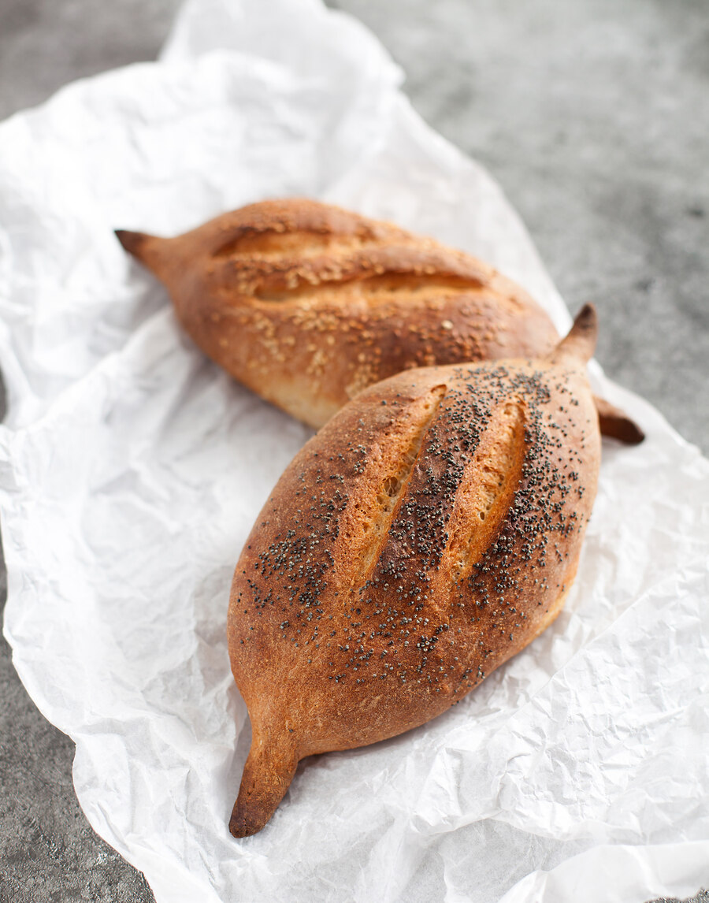

Когда я готовлю дома творог или простой домашний сыр (типа адыгейского), у меня остается кисломолочная сыворотка. Ее можно добавлять в смузи, а еще на ней отлично получаются блинчики и хлеб. Обращаю ваше внимание, что речь идет именно о кисломолочной сыворотке из-под сыра или творога, при производстве которого не использовался сычужный фермент и не добавлялась соль. Как получить сыворотку, если вы не готовите дома творог и сыр? Можно сделать густой греческий йогурт, просто отвесив обычный йогурт, и использовать оставшуюся сыворотку. Можно также использовать пахту, но ее нужно разбавить водой по крайней мере наполовину.
Для этого хлеба можно использовать цельнозерновую пшеничную муку или муку из полбы. Я очень люблю полбяную — хлеб с ней получается ароматным, с ореховой ноткой. Пропорции цельнозерновой и белой муки можно варьировать. Можно печь только из цельнозерновой муки, но с добавлением пшеничной муки высшего или 1 сорта, хлеб получается более воздушным. Если решите печь только из цельнозерновой, воды потребуется чуть больше.
Хлеб можно выпекать как в форме, так и без нее, в виде небольших батонов. Мне нравится формовать как римские чириолы — пухлые булочки с длинными сужающимися кончиками.
Тесто можно вымесить накануне, а формовать и выпекать на следующий день, дав ему согреться в течение 1 часа при комнатной температуре. В этом случае тесто нужно убрать в холодильник через 45–60 минут после первой расстойки.